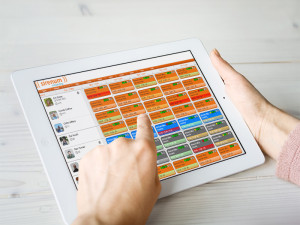

Cut yourself and your students a break: If school wasn’t stressful enough, online learning can make what’s already difficult even worse! Try to cut back on the work you assign to students and make assignments fun, engaging, and educational!

Schedule your time well for yourself and your students: During a pandemic, it can be very easy to lose track of your time or get overwhelmed with work. Use an application on your phone or tablet to schedule your time and set up notifications to remind you of your to do list. The best way to keep your sanity is to be productive during these trying times.
Record your lectures: During a pandemic where students and teachers are forced to teach and learn online, it can be helpful for students to be able to view past class recordings. While streaming the class is paramount to maintain interaction with your class, a recording is almost equally as important, given shifting time schedules and ensuring the students can get the firmest grasp possible over the material.
❮
❯